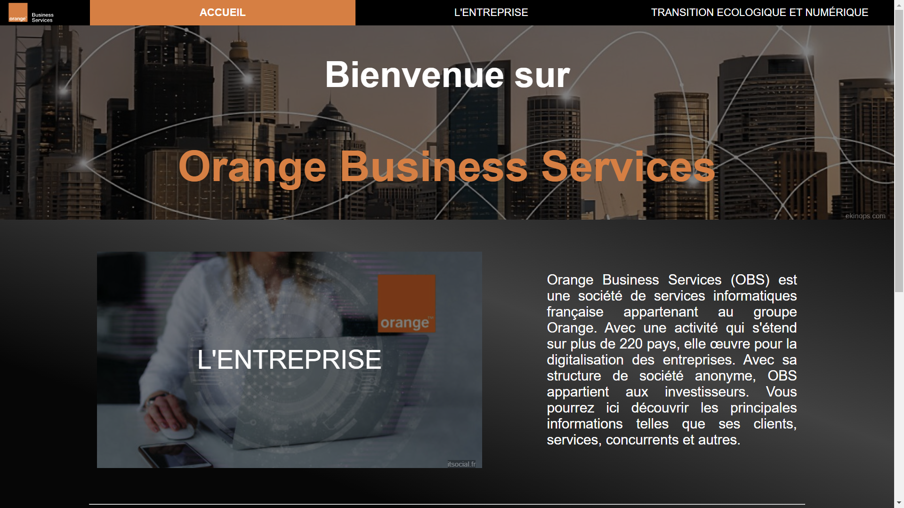

Recueil de besoins ET Découverte de l'environnement économique et écologique
• Temps de travail accordé: 2 semaines
• Nombre de membres dans le groupe: 4
Rappel du sujet
Il a fallu créer un site vitrine pour l'entreprise Orange Business Service.
Compétences nécessaires:
• Travail d'équipe
• Comprendre les besoins d'un client
• Synthetiser des informations
Lors de cette SAE, nous avons dû faire des recherches pour connaitre le mieux possible notre client. Le site était destiné à la génération alpha, plus précisement a des élèves de troisième en recherche de stage. Nous avons donc prit en compte des facteurs important, par exemple le fait que les jeunes d'aujourd'hui n'aiment pas lire. Tout les termes difficiles ont été modifié et le site a été simplifié et illustré pour attirer le regard.
